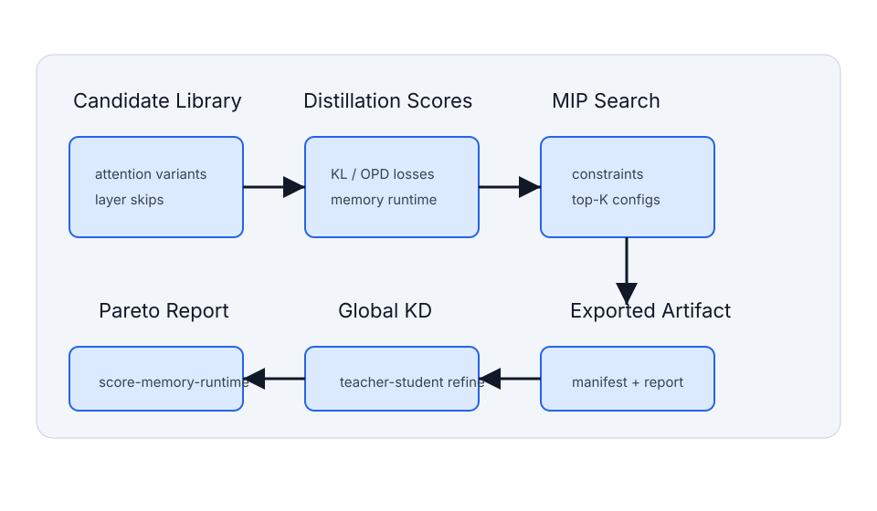

Search
Score layer replacements and solve constrained MIP objectives.
Distillation-guided architecture search for LLM, VLM, and VLA inference.
omnidistill benchmark --suite benchmarks/suites/toy_smoke.json

Score layer replacements and solve constrained MIP objectives.
Explore quality, memory, and runtime trade-offs with reproducible reports.
Assemble selected students and refine them with global distillation.
Evaluate, profile, export, and publish result manifests.
Read the docs in docs/, run suites from benchmarks/, and publish manifests in results/.